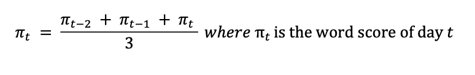
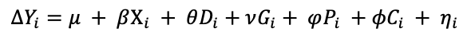

Political Instability and Foreign Exchange Rate Movements
A Focus on the 2021 Myanmar Military Coup
Context
This is a term paper that I wrote for ECON 1680: Text Analysis and Machine Learning in Economics. On February 1, 2021, the Myanmar military launched a coup, reversing a decade-long democratic process. Following the coup, massive protests and civil disobedience movements such as resigning government positions erupted nationwide. Within months, the situation escalated to excessive use of force by the military, imposition of Martial Law, and disconnecting the country from the internet and telecommunication services. The international community has responded with condemnations and heavy economic sanctions and most foreign companies have halted their operations in Myanmar.
The aim of the paper is to measure the effect of the coup on three foreign exchange rates (U.S. dollar, Singaporean dollar, Thai bhat) by measuring political instability through newspaper articles.
Link to paper: Click Here
Data for this paper is extracted from the Eikon Datastream, Central Bank of Myanmar, and ProQuest Historical Newspapers Database. Data includes:
- Myanmar COVID-19 Case Reports (Daily)
- Dollar-Kyat Exchange Rates (Daily)
- Dollar Index (Daily)
- Singapore-Dollar Index (Monthly)
- Thai-Bhat Index (Monthly)
- Government Consumption (Quarterly)
- Private Consumption (Quarterly)
Methodology
Bag-of-Words Model
Using the geopolitical risk index developed by Caldara and Iacoviello (2021) which is conducted on a sample of 25 million English-language news articles from 1900 through the present, this paper applies the bag-of-words model to find the term frequency of words that indicate geopolitical risk in newspaper articles.
To account for the fact that articles are concentrated around when the coup was launched and follows a decreasing trend afterwards, the political instability term frequency is divided by the number of articles published on that day to create a word score. Furthermore, foreign exchange markets do not operate on the weekends and there is a lag between articles being published and people reading the news. To address these two issues, the paper takes the average of the word scores over three days, mimicking a moving average process with two lags.
Ordinary Least Square (OLS) Regression
The regression model for Singapore dollar-kyat and Thai bhat-kyat exchange rate is as follows:
ΔYi represents the change in daily dollar-kyat exchange rate of day i. Xi represents the term frequency of words that indicate political instability divided by number of articles published on day i and averaged over three days. ΔDi represents the change in daily dollar index, Gi represents the government consumption, and Pi represents the private consumption, and Ci represents new covid cases of day i.
Results
The regression results show that the β for all three exchange rates are positive.
- U.S dollar β: 0.6991
- Singaporean dollar β: 0.5018
- Thai bhat β: 0.0158
These results are in line with the findings of existing literature. When there is increased civil instability (higher word score), it is expected that the exchange rates will increase (higher change in exchange rate) as investors shy away from local currency.
Conclusion
I learned a lot about data collection, data cleaning, and data analysis from this project after weeks of wrangling the data with python. It is nice to see that the graphs along with the results are a robust confirmation of what I witnessed during my time in Myanmar in 2021.